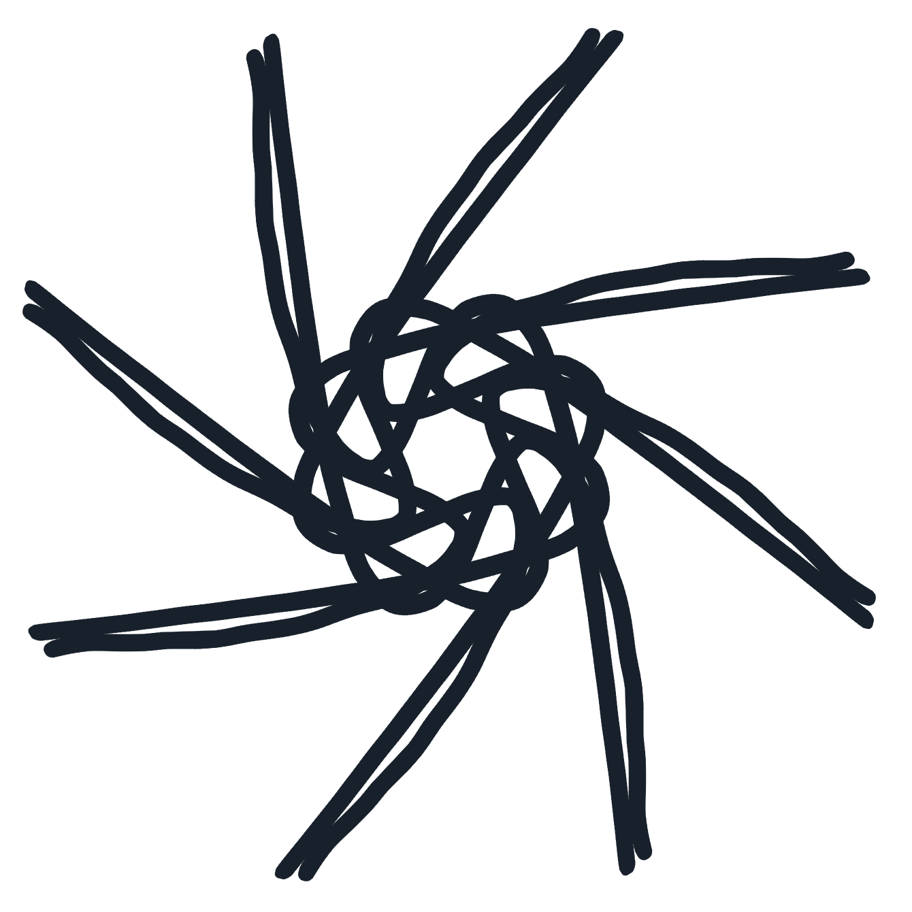
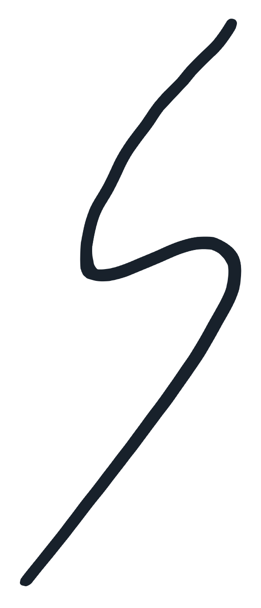
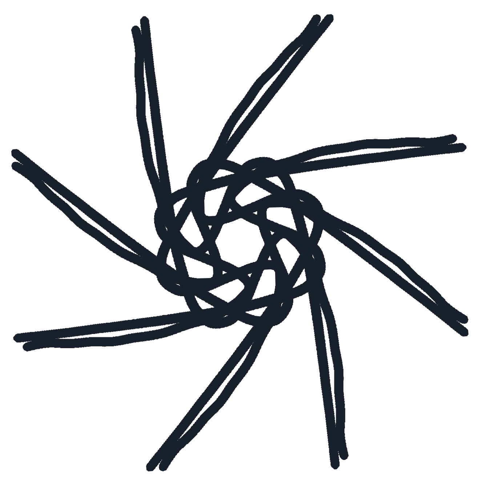

Your assembled sketch
The intended eye and curved rays
Your original artwork, shown without its surrounding whitespace.
View the current live SVG with shorter, smooth graphite rays. The source reconstruction below is retained for comparison.
The mandala is the eye. Its overlapping curves and angular openings stay intact, while the original sweeping tails form the surrounding star. This reconstruction uses your actual source stroke, rather than a newly drawn substitute.
The intended eye and curved rays
Your original artwork, shown without its surrounding whitespace.
Original contour, lightly smoothed edges

The same stroke is rotated eight times. The edge cleanup keeps its line weight and bends. The comparison is a reconstruction of the hand-assembled sketch, not an exact match to every placement.
The angular opening, overlapping arcs, and small triangular spaces come from the source shape itself. No circular cutout, artificial weave, or extra ornaments are added.
The narrow waist and broad curved hook are the important differences from the previous candidates. They determine where the curves cross in the mandala.

The stroke boundary was extracted from the supplied image. The outline received only small edge smoothing. Eight copies rotate in 45° steps around a fitted center, keeping the irregular flow that creates the focused eye.
These previews are shown at actual CSS pixel sizes.
The small spaces compress at 24px. The full eye detail is clearest at 96px and above. The detailed source geometry is preserved here rather than simplified for an icon.

This preserves the small irregularities of the original stroke edge. The main version above smooths only that boundary.